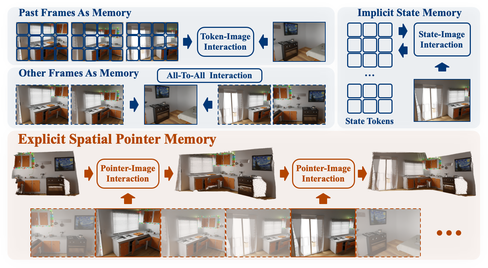
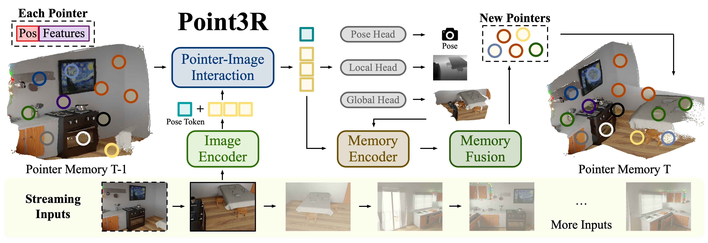
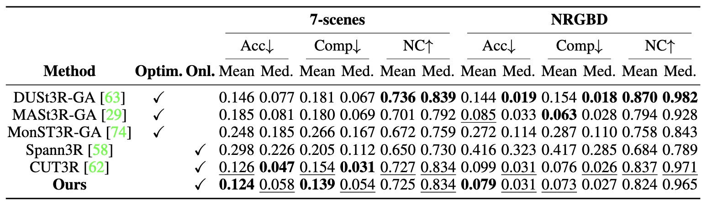
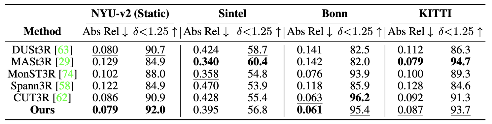
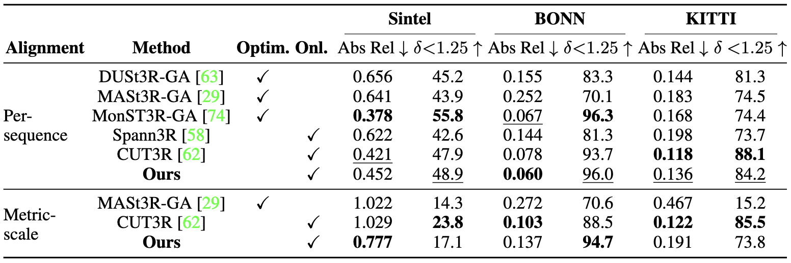

Overview of our contributions. We propose Point3R, an online framework targeting dense streaming 3D reconstruction. Given streaming image inputs, our method maintains an explicit spatial pointer memory in which each pointer is assigned a 3D position and points to a changing spatial feature. We conduct a pointer-image interaction to integrate new observations into the global coordinate system and update our spatial pointer memory accordingly. Our method achieves competitive or state-of-the-art performance across various tasks: dense 3D reconstruction, monocular and video depth estimation, and camera pose estimation.
Overall Framework of Point3R
Given streaming image inputs, our method maintains an explicit spatial pointer memory to store the observed information of the current scene. We use a ViT encoder to encode the current input into image tokens and use ViT-based decoders to conduct interaction between image tokens and spatial features in the memory. We use two DPT heads to decode local and global pointmaps from the output image tokens. Besides, a learnable pose token is added during this stage so we can directly decode the camera parameters of the current frame. Then we use a simple memory encoder to encode the current input and its integrated output into new pointers, and use a memory fusion mechanism to enrich and update our spatial pointer memory.

Results
3D Reconstruction
We evaluate the 3D reconstruction performance on the 7-scenes and NRGBD datasets. Our method achieves comparable or better results than other memory-based online approaches.

Monocular Depth Estimation
We evaluate zero-shot monocular depth estimation performance on NYU-v2 (static), Sintel, Bonn, and KITTI datasets. Our method achieves state-of-the-art or competitive performance in both static and dynamic, indoor and outdoor scenes.

Video Depth Estimation
We align predicted depth maps to ground truth using a per-sequence scale (Per-sequence alignment) to evaluate per-frame quality and inter-frame consistency. We also compare results without alignment with other metric pointmap methods like MASt3R and CUT3R (Metric-scale alignment).

Visualizations
We visualize the 3D reconstruction results of our method under sparse and dense inputs. We will show more visualizations soon.